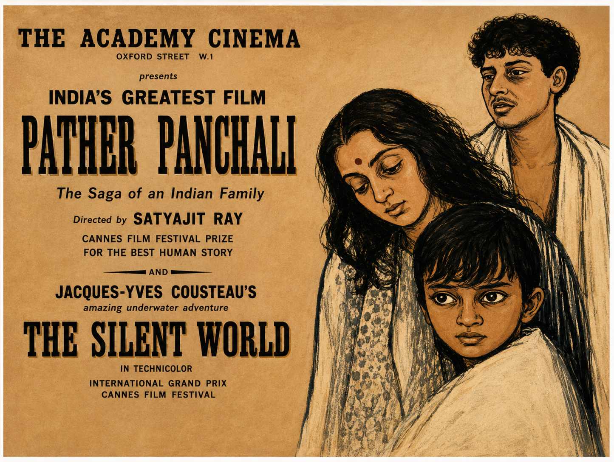
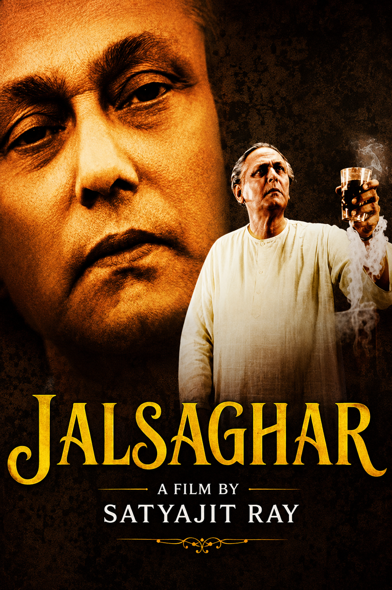
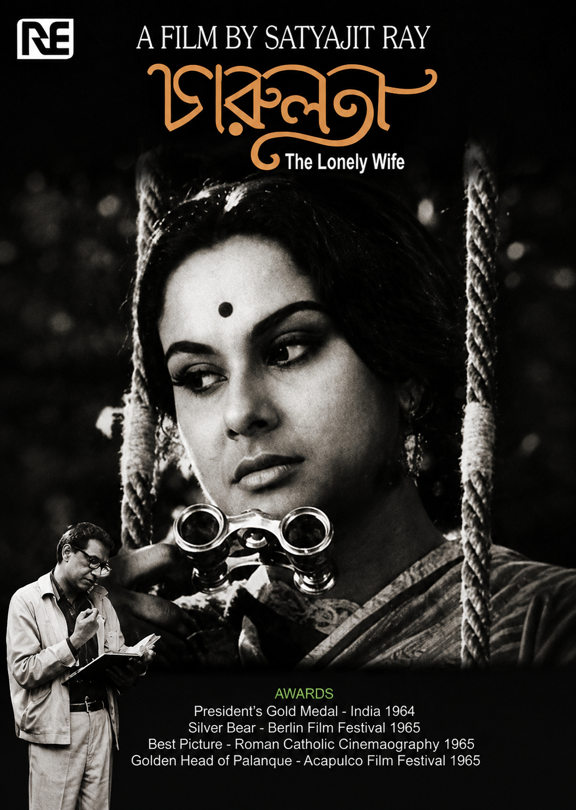
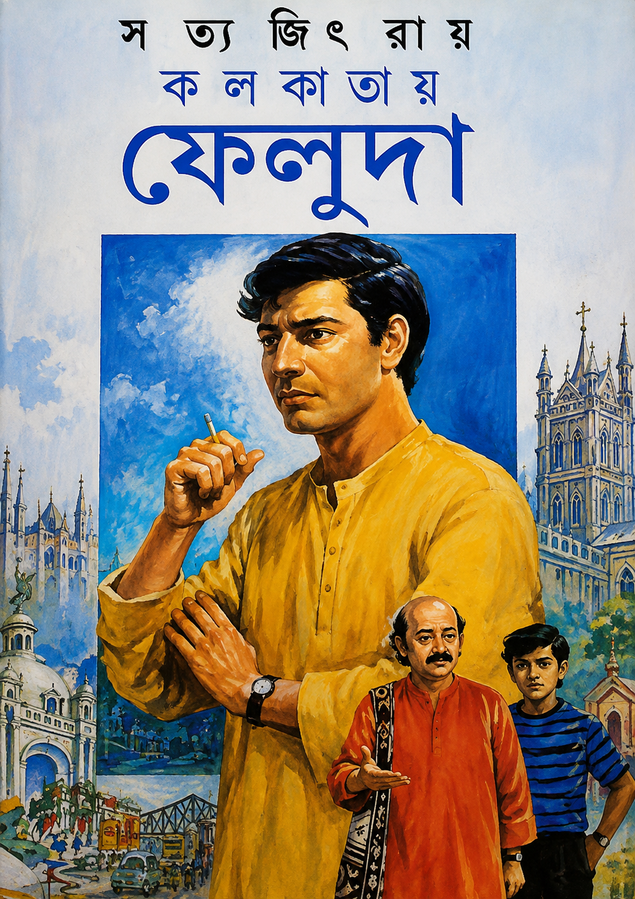
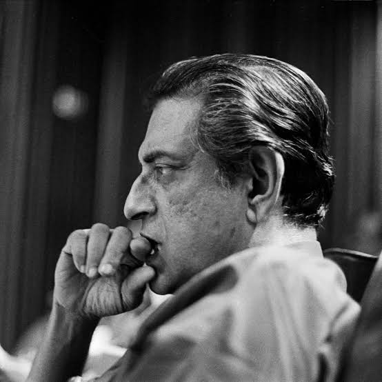
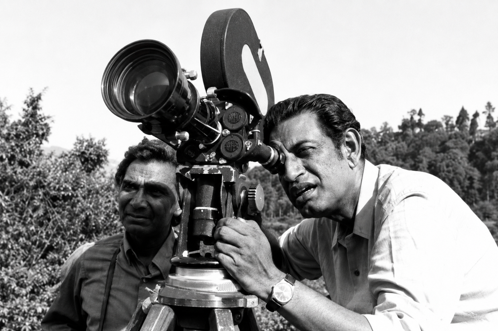

Timeline of a Genius
1921
Born in Calcutta on May 2, into a family prominent in arts and
literature.
1955
Released his debut film Pather Panchali, winning
11 international prizes.
1992
Awarded the Academy Honorary Award (Oscar) and
the Bharat Ratna.
Cinematic Masterpieces

Pather Panchali
1955

Jalsaghar
1958

Charulata
1964
Children & Teen Literature

Kolkatae Feluda
Mystery Novel
Feludar Goendagiri
First Appearance
Professor Shonku
Science Fiction
Poetry & Short Stories
Todar Desh (Nonsense Rhymes)
Continuing the legacy of his father Sukumar Ray, Satyajit Ray wrote numerous nonsense rhymes...
Abol Tabol (Translations)
Ray masterfully translated his father's iconic collection of Bengali nonsense poetry into English...
Critical Essays
Our Films, Their Films (1976)
An anthology of film criticism containing Ray's insights on Indian and international cinema...
Bishoy Cholochitro (1976)
A detailed Bengali essay collection focusing on the aesthetic, technical, and storytelling aspects...
Behind The Lens (Gallery)

